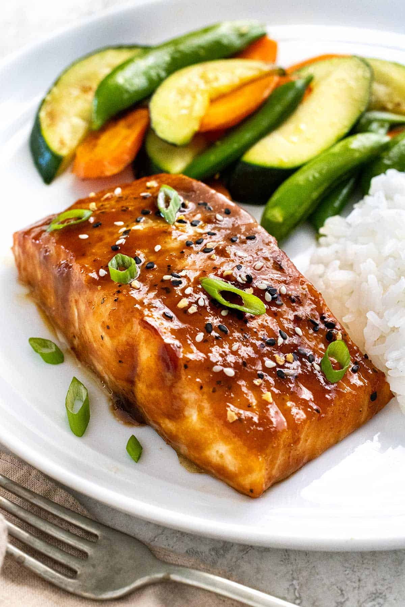

Home
Miso Salmon

About the Dish!
This popular Japanese miso salmon recipe is an easy meal
ready in 15 minutes! Succulent salmon fillets topped with delectable miso
and soy glaze and broiled to perfection. Serve with your favorite sides,
like steamed white rice and bok choy, for a complete meal.
Ingredients
- 1/4 cup packed dark brown sugar
- 2 tablespoons red miso
- 2 tablespoons hot water
- 2 tablespoons soy sauce
- 4 skinless salmon fillets, 5 to 6 ounce pieces
- kosher salt, for seasoning
- black pepper, for seasoning
- 2 tablespoons sliced green onions
- 1/2 teaspoon sesame seeds